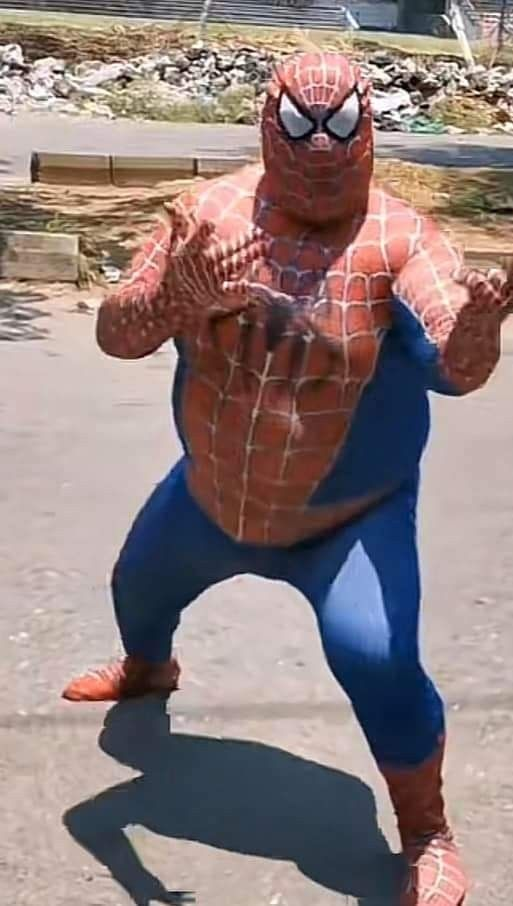

Peter Parker es un huérfano de Queens, Nueva York, que fue criado por sus tíos Ben y May. Es un genio de la ciencia, pero socialmente tímido. Su vida cambió cuando una araña radiactiva lo mordió en una excursión, dándole fuerza sobrehumana y el "sentido arácnido". Tras dejar escapar a un ladrón que luego mató a su tío Ben, Peter aprendió que "un gran poder conlleva una gran responsabilidad". A diferencia de otros héroes, Peter es alguien común: sufre para pagar la renta, le va mal en el amor y trabaja como fotógrafo para J. Jonah Jameson (quien lo odia). Es el héroe que sacrifica su vida personal para salvar a una ciudad que no siempre se lo agradece, usando el humor para ocultar su propio miedo mientras pelea
La historia de Peter Parker comienza en Queens, NY, como un estudiante huérfano y brillante que vive con sus tíos, Ben y May. Durante una exhibición científica, una araña radiactiva lo muerde, otorgándole fuerza sobrehumana, agilidad y un "sentido arácnido" que le advierte del peligro. Al principio, Peter usa sus nuevos poderes de forma egoísta para ganar dinero en la lucha libre. Una noche, por pura arrogancia, deja escapar a un ladrón que corría por el pasillo. Días después, descubre que ese mismo delincuente asesinó a su Tío Ben durante un asalto. Destrozado por la culpa, Peter comprende que su inacción causó la tragedia, adoptando la lección que define su vida: "Un gran poder conlleva una gran responsabilidad". Desde entonces, Peter vive una doble vida agotadora. Como Spider-Man, protege a Nueva York de villanos como el Duende Verde o el Doctor Octopus; como Peter Parker, intenta terminar sus estudios, mantener empleos mal pagados (como fotógrafo en el Daily Bugle) y cuidar a su tía May. Su historia no es la de un dios, sino la de un joven común que sacrifica su felicidad personal y su reputación para hacer lo correcto, aunque el mundo a veces lo trate como un criminal.
¿Quién es?
Norman Osborn es un científico millonario y dueño de Oscorp. Tras probar un suero experimental en sí mismo, obtuvo súper fuerza pero perdió la cordura, naciendo así el Duende Verde. Usa un planeador tecnológico y bombas de calabaza. Es el villano más odiado por Peter porque es el padre de su mejor amigo (Harry) y fue quien asesinó a su primer gran amor, Gwen Stacy. Es pura maldad y obsesión.
Mary Jane
Su novia